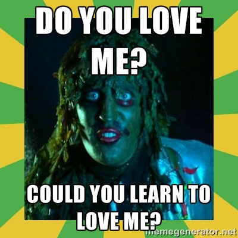
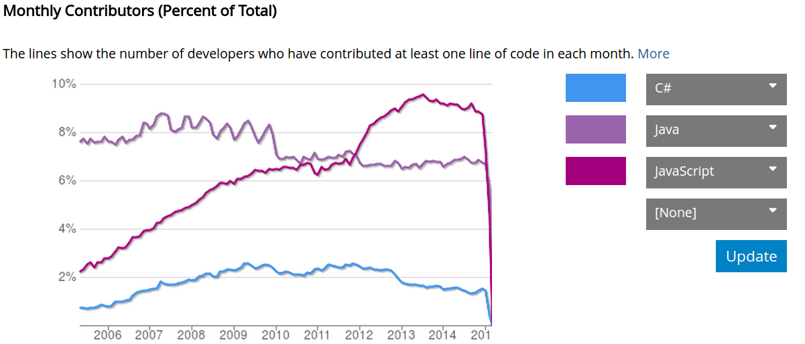
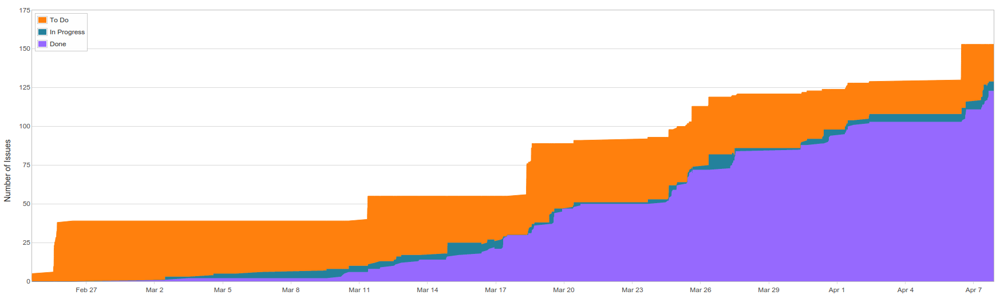
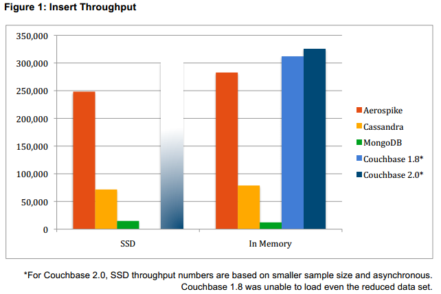
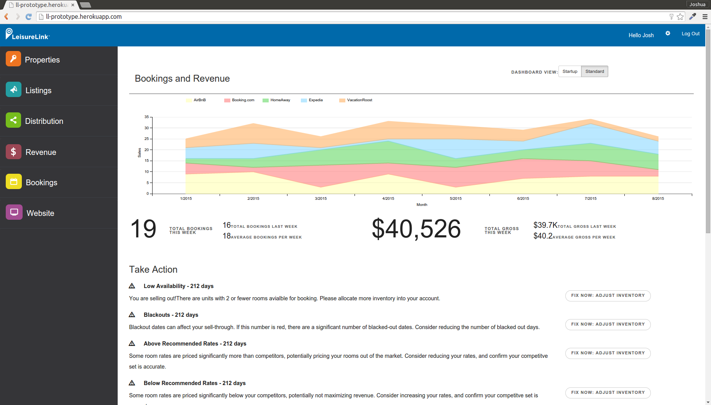
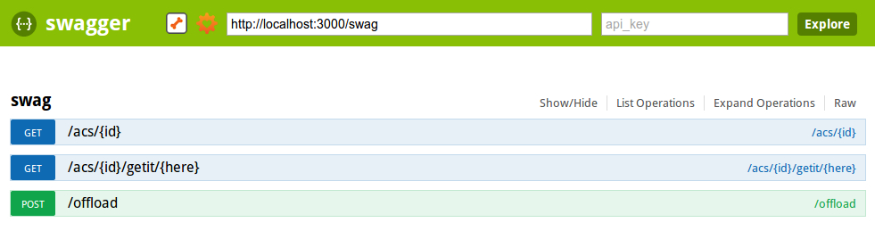
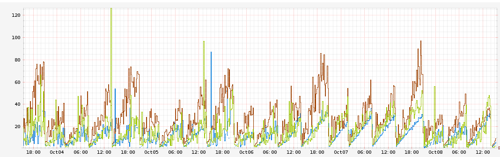

Agenda ...
Today, we will discuss the MEAN stack
Agenda
- Defining MEAN
- Why be MEAN
- Getting MEAN
Why are we talking about MEAN?
- LeisureLink - Prototyping
- Advantages to Integrations - Event Driven, Non-blocking I/O
- Advantages to Data Services - Agile data models, Faster writes
Defining MEAN ...
MEAN
Defining MEAN
-
Mongo
- Document Store Database with JavaScript syntax
- What does this mean?
- Non-relational - agile data model, faster writes
-
Express
- Web application framework for NodeJS
- What does this mean?
- Idioms, Conventions, and Dependencies - quick prototyping
-
Angular
- Front-end MVC
- What does this mean?
- Idioms, Conventions, and SPA - quick prototyping
-
NodeJS
- Event-driven, Non-blocking IO App Server
- What does this mean?
- Don't wait on threads - keeps CPU busy and memory usage low
Why be MEAN ...
What does this really Mean? MEAN is a tragic hero - what makes it good makes it bad
Pros
-
Isomorphic
- Everything is JavaScript
- One language to rule them all
- One language for your team to learn
- One language for the community to discuss
-
Non-Blocking IO
Cons
-
Isomorphic
- Everything is JavaScript
- One language to rule them all
- One language for your team to learn
- One language for the community to discuss
-
Non-Blocking IO
Why be MEAN ...
JavaScript is an old, freaky swamp monster, but we still need to learn to love it


Why be MEAN ...
There is a learning curve, and then you accelerate

Why be MEAN ...
Mongo writes can be fast

Getting MEAN ...
Node Version Manager makes managing your runtime versions simple
- nvm install
- nvm use stable
- nvm install 0.10
- nvm use 0.10
Getting MEAN ...
NPM is a package/dependency management tool for NodeJS (back-end)
- package.json (like a pom.xml)
- npm install
- npm install -g
- npm install --save
- npm install --save-dev
- Auto downloaded and bundled - not wired up in express (jars included, but beans not defined)
Getting MEAN ...
Yeoman - The "Easy" button for MEAN Project Startup
The kitchen sink of reasonable default project features
- Created by Addy Osmani (He's the expert)
- Angular Fullstack
- npm install -g yo
- npm install -g generator-angular-fullstack
- Scaffolding
- Grunt
- Bower
- JSLint/JSHint
- LiveReload
- AutoInjection
- Image processing
- Minification
- UnCSS
- Deployment - Heroku/OpenShift
- Unit tests
- Functional tests
- Cross-device testing
Getting MEAN ...
Bower is dependency management for your front-end
- package.json
- bower install --save
- bower install --save-dev
- Auto downloaded, injected, reloaded - not wired up in Angular (front-end jars included, but beans not defined)

Getting MEAN ...
Grunt is the default build tool (Gulp is the up-and-comer)
The Gradle of JavaScript
- grunt serve
- grunt
- grunt buildcontrol:heroku

Getting MEAN ...
Deployment with Heroku
Go live in minutes

Getting MEAN ...
Swagger, Restify, and Express have everything you need to jumpstart your API
swagger-restify-express

Getting MEAN ...
Don't get burned by the flame (graphs)
All this power comes with responsibility - understand your dependencies

Netflix Lessons
Getting MEAN ...
Mongoose Object Document Model (ODM) makes implementing your domain relatively painless
- Models
- Nested documents
- References
- Populate
- Middleware
- Virtuals
- Methods
What does this MEAN ?..
MEAN
Defining MEAN
-
Mongo
- Document Store Database with JavaScript syntax
- What does this mean?
- Non-relational - agile data model, faster writes
-
Express
- Web application framework for NodeJS
- What does this mean?
- Idioms, Conventions, and Dependencies - quick prototyping
-
Angular
- Front-end MVC
- What does this mean?
- Idioms, Conventions, and SPA - quick prototyping
-
NodeJS
- Event-driven, Non-blocking IO App Server
- What does this mean?
- Don't wait on threads - keeps CPU busy and memory usage low
What does this MEAN?
- LeisureLink - Prototyping
- Advantages to Integrations - Event Driven, Non-blocking I/O
- Advantages to Data Services - Agile data models, Faster writes